Japan / Miyagi / Minamisanriku
Minamisanriku
Minamisanriku · Miyagi
Minamisanriku
Highlighted on the Miyagi map.
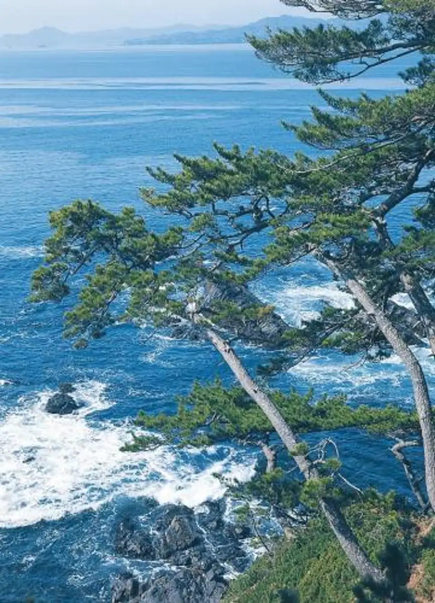
Stay
南三陸ホテル観洋
Minamisanriku Hotel Kanyou
明神崎荘
Myoujin Saki Sou
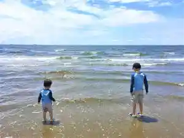
日の出の見える宿 ニュー泊崎荘
Hinode No Mie Ru Yado Nyuu Haku Saki Sou
Dining
創菜旬魚はしもと
Sousai Shungyo Hashimoto
かいせんどころ 梁
Kaisendokoro Hari
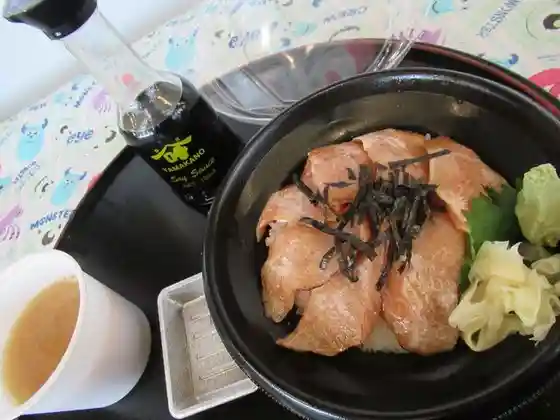
山内鮮魚店
Yamauchi Sengyoten
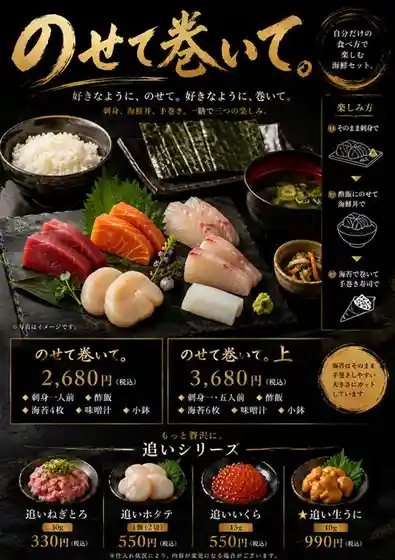
弁慶鮨
Benkei Sushi
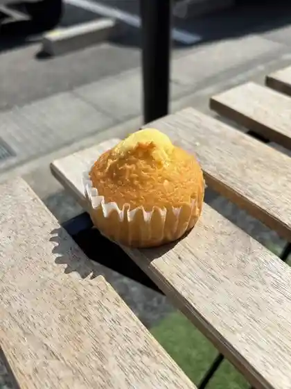
オーイング菓子工房Ryo
Ooingu Kashi Koubou Ryo
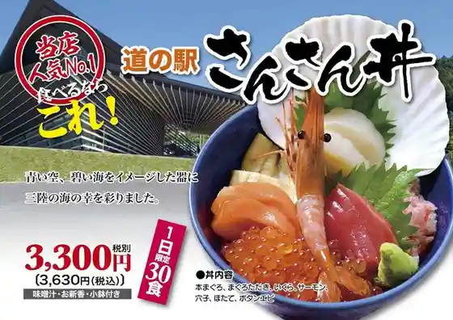
食楽 しお彩
Shoku Raku Shio Sai
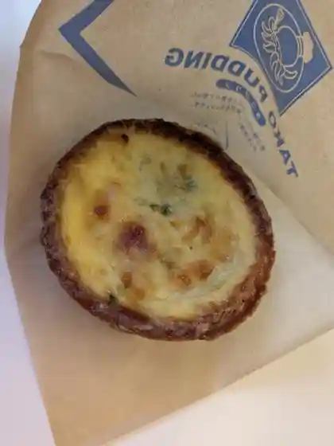
菓房山清
Kabou Sansei
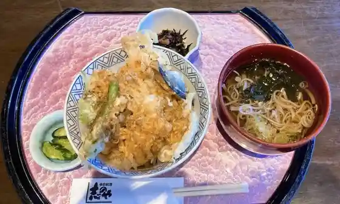
志のや
Kokorozashi Noya
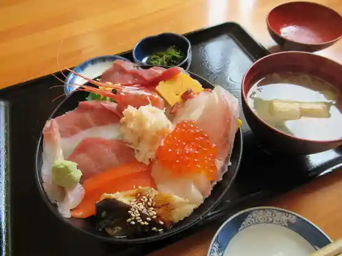
すし･丼ぶりの店 くう海
Sushi Sushi Donburi Burino Mise Kuu Umi
丼専門店 海たろう
Donburi Senmonten Umi Tarou
シーサイド
Shiisaido
FLOR GELATO ITALIANO MIYAGI
FLOR GELATO ITALIANO MIYAGI
月と昴
Gatsu To Subaru
南三陸ホテル観洋
Minamisanriku Hotel Kanyou
食事処 松原
Shokuji Tokoro Matsubara
雑貨と珈琲の店 サタケ
Zakka To Koohii No Mise Satake
雄新堂
Osu Shindou
中華タナカ
Chuuka Tanaka
すがわら
Sugawara
ニュー泊崎荘
Nyuu Haku Saki Sou
和sian-cafe aimaki
sian-cafe aimaki
阿部茶舗
Abe Chaho
珈琲神社
Koohii Jinja
飛上
Hi Ue
南三陸さんさん商店街
Minamisanriku Sansan Shoutengai
ロイヤルフィッシュ
Roiyarufisshu
味の郷 一心
Aji No Sato Isshin
南三陸 清観荘
Minamisanriku Kiyoshi Kan Sou
南三陸まなびの里 いりやど
Minamisanriku Manabino Sato Iriyado
漁家民宿 やすらぎ
Gyoka Minshuku Yasuragi
そば処 京極
Soba Tokoro Kyougoku
松野や
Matsuno Ya
SEASON cafe&shop
SEASON cafe&shop
WHITE SHIP BAUM FACTORY
WHITE SHIP BAUM FACTORY
Sun cafe
Sun cafe
下道荘
Gedou Sou
及善蒲鉾店 南三陸店
Kyuu Zen Kamaboko Mise Minamisanriku Mise
海鮮マルセン
Kaisen Marusen
丸荒 直営店
Maru Kou Chokueiten
南三陸ワイナリー
Minamisanriku Wainarii
歌旅人
Uta Tabibito
明神崎荘
Myoujin Saki Sou
竜巳や
Ryuu Shi Ya
自家製餃子 まるぎょう
Jikasei Gyouza Marugyou
ブルーライン
Buruurain
OKUTOCAFE
OKUTOCAFE
ながしず荘
Nagashizu Sou
ちばのり店
Chibanori Mise
ランチ&カフェ リッチー
Ranchi & Kafe Ritchii
自然卵農園 菓子工房
Shizen Tamago Nouen Kashi Koubou
さんさん市場
Sansan Shijou
食飲笑 うたつがね
Shoku In Warai Utatsugane
そばカフェ 風庵
Soba Kafe Kaze Iori
平成の森
Heisei No Mori
コミュニティカフェ こもんず
Komyuniteikafe Komonzu
まきの衣料
Makino Iryou
菓子工房 ASAHIDO
ASAHIDO
自然卵のクレープ モアイ店
Shizen Tamago No Kureepu Moai Mise
神割
Kami Wari
さかなのみうら
Sakananomiura
高貞菓子店
Takasada Kashi Mise
和食処 潮騒
Washoku Tokoro Shiosai
ちょこっと
Chokotto
和来
Wa Rai
カフェ かなっぺ
Kafe Kanappe
マルタケ商店
Marutake Shouten
居酒屋 鷲巣
Izakaya Washizu
湾岸おおもり
Wangan Oomori
さとうみファーム
Satoumi Faamu
たいしゅう
Taishuu
パティスリークリコ
Pateisuriikuriko
民宿 あおしま荘
Minshuku Aoshima Sou
天門屋
Tenmon Ya
心結ぶカフェ むすびや
Kokoro Musubu Kafe Musubiya
パン・菓子工房 oui
パン・菓子工房 oui
ドライブイン ひと休み
Doraibuin Hito Yasumi
たこやき たかみ
Takoyaki Takami
歌津小太郎 歌津本店
Utatsu Kotarou Utatsu Honten
津の宮荘
Tsu No Miya Sou
わたや
Wataya
鯛あん
Tai An
校舎の宿 さんさん館
Kousha No Yado Sansan Kan
ばっかり茶家
Bakkari Chake
コーヒーとステーキの店 中屋
Koohii To Suteeki No Mise Nakaya
Kukai
Kukai
Seaside
Seaside
Sosaishungyo Hashimoto
Sosaishungyo Hashimoto
Seafood Shohari
Seafood Shohari
Farm Restaurant Matsunoya
Farm Restaurant Matsunoya
Kondo Ha Izakaya Dayo Hinode So
Kondo Ha Izakaya Dayo Hinode So
Horaku Shokudo
Horaku Shokudo
Keimeimaru
Keimeimaru
Maruara Oikawa
Maruara Oikawa
Yamasei Minami Sanriku Main Store
Yamasei Minami Sanriku Main Store
Sobadokoro Kyogoku
Sobadokoro Kyogoku
Korakuen Minami Sanrikucho
Korakuen Minami Sanrikucho
Seikokan
Seikokan
Snack Ainikoi
Snack Ainikoi
Minasan Kan
Minasan Kan
Chinese Cuiseine Tobiage
Chinese Cuiseine Tobiage
Soba Cafe Fuan
Soba Cafe Fuan
Sea Food BBQ
Sea Food BBQ
Hamanoya
Hamanoya
Besano
Besano
Tokuho
Tokuho
Hottategoya
Hottategoya
Lunch Cafe Ritchey
Lunch Cafe Ritchey
Mog
Mog
Azuma Shokudo
Azuma Shokudo
Oshokuji Dokorotakeya
Oshokuji Dokorotakeya
Sobadokoro Haga
Sobadokoro Haga
Sugawara
Sugawara
Kanedaya Main Store
Kanedaya Main Store
Snack Dream
Snack Dream
Tsukito Subaru
Tsukito Subaru
Onsen
Minamisanriku Hotel Kanyo Baths
Ocean-view hot-spring baths at Hotel Kanyo
Shop
Michi-no-Eki Sansan Minamisanriku
Road station for local seafood products and reconstruction-area information
Minamisanriku Winery Shop
Local winery tasting room and bottle shop in Asahigaura
Sights
Miyagi Shizugawa Nature House
Prefectural outdoor-education center in Togura
Satoumi Farm
Coastal farm experience base in Utatsu
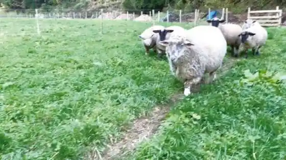
Minamisanriku Sea Visitor Center
Bay visitor center on marine life and the local coastline
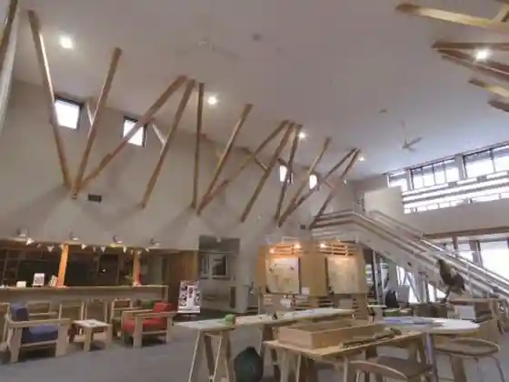
Shizugawa Bay Cruising
Scenic bay cruises departing near Hotel Kanyo
Kamiwarizaki Campground
Coastal campground at Kamiwarizaki in Togura
Heisei-no-Mori Campground
Forest campground in Utatsu Masuzawa
Shizugawa Fish Market
Working fish market on the rebuilt Shizugawa waterfront
Moai Statues
Easter Island–gifted Moai statues at the Sansan area
Hikoro-no-Sato
Local produce and experience site in Iriya Sakurazawa
Tomarisaki Cape
Coastal cape lookout in the Ozaki area
Sansan Shopping Street
Rebuilt shopping street facing Shizugawa Bay
Mount Tatsue
Mountain straddling Minamisanriku and Kesennuma with hiking routes
YES Factory Workshop
Hands-on craft workshop in Iriya